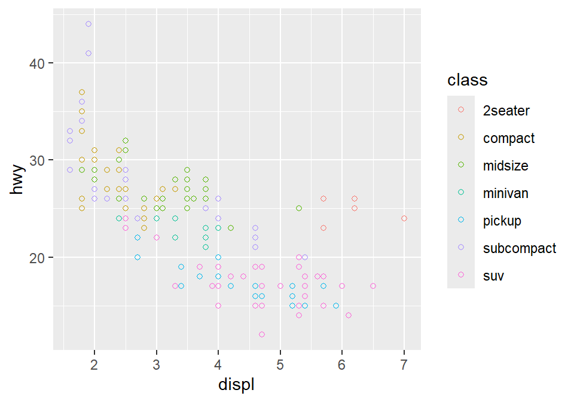
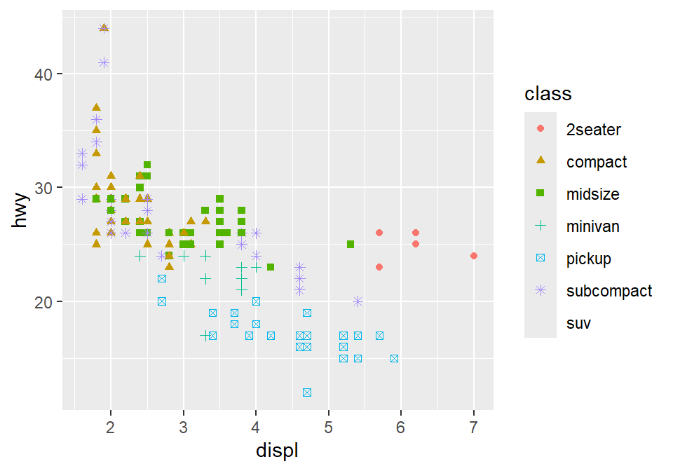

Chapter 3 Basics of ggplot2 and Correlation Plot
Load these packages by typing the codes below.
library(tidyverse) # it has ggplot2 package
library(cowplot) # it allows you to save figures in .png file
library(smplot2)3.1 Uploading data
3.1.1 Sample data: mpg
I will be using an example from the book R for Data Science (https://r4ds.had.co.nz/data-visualisation.html).
- Question: Do cars with large engines use up more fuel than the those with small ones?
First, let’s open mpg, which is a data frame stored in the ggplot2 package.
mpg contains data about cars in the US. You can type
?mpgfor more information.- displ: the size of the car’s engine in liters
- hwy: fuel efficiency. If it’s high, then the car uses less fuel per distance.
mpg## # A tibble: 234 × 11
## manufacturer model displ year cyl trans drv cty hwy fl class
## <chr> <chr> <dbl> <int> <int> <chr> <chr> <int> <int> <chr> <chr>
## 1 audi a4 1.8 1999 4 auto… f 18 29 p comp…
## 2 audi a4 1.8 1999 4 manu… f 21 29 p comp…
## 3 audi a4 2 2008 4 manu… f 20 31 p comp…
## 4 audi a4 2 2008 4 auto… f 21 30 p comp…
## 5 audi a4 2.8 1999 6 auto… f 16 26 p comp…
## 6 audi a4 2.8 1999 6 manu… f 18 26 p comp…
## 7 audi a4 3.1 2008 6 auto… f 18 27 p comp…
## 8 audi a4 qua… 1.8 1999 4 manu… 4 18 26 p comp…
## 9 audi a4 qua… 1.8 1999 4 auto… 4 16 25 p comp…
## 10 audi a4 qua… 2 2008 4 manu… 4 20 28 p comp…
## # ℹ 224 more rowsNotice that some columns and rows are not shown. You can type View(mpg) to see the entire data frame.
- Each row is an unique observation.
- Each column is an unique variable/condition.
View(mpg)3.2 Basics of ggplot2
3.2.1 Let’s make some graphs
Question: Do cars with large engines use up more fuel than the those with small ones?
To answer our question, we need to plot mpg data. The x-axis should be displ, the y-axis should be hwy.
ggplot(data = mpg) +
geom_point(mapping = aes(x = displ, y = hwy))
We find that a smaller car has a higher efficiency and that a larger car has a lower efficiency. In other words, we see a negative relationship.
3.2.2 How ggplot works
When you are making a graph with ggplot2, always begin by typing the function ggplot().
- The data you want to plot is the first argument here. Ex.
ggplot(data = mpg).
However, ggplot(data = mpg) alone does not create a graph. You will need add (by typing +) more layers, such as geom_point().
geom_point()adds points to your graphs. You will need to specify (or map) x- and y-axes in theaes()function, which means aesthetics. This process is called mapping.As you might expect, there are other geom functions, such as
geom_bar(),geom_boxplot(),geom_errorbar(). They plot bar graphs, boxplots and error bars, respectively.
Here is the template for using ggplot2 (copied from R for Data Science).
ggplot(data = <DATA>) +
<GEOM_FUNCTION>(mapping = aes(<MAPPINGS>))3.2.3 Different color of points for each unique group
You can apply different colors by the class of each car (each car = each row of the mpg data frame).
Include
classvariable in theaes()function.This maps the third variable
classinto your graph.aes()means aesthetic (ex. color, shape, etc).
ggplot(data = mpg) +
geom_point(mapping = aes(x = displ, y = hwy, color = class))
You can also set different shapes for each group of the data.
ggplot(data = mpg) +
geom_point(mapping = aes(x = displ, y = hwy, shape = class))
You could also set it using aesthetic parameter such as size or transparency (not recommended) across groups. However these are not recommended as it is very hard for us to see the differences in both size and alpha as these are continuous parameters. But you get the idea. Using aes() in a geom function (ex. geom_point()), you can label different group of points.
# different levels of transparency (alpha) for each group
ggplot(data = mpg) +
geom_point(mapping = aes(x = displ, y = hwy, alpha = class))
# different sizes of the points for each group
ggplot(data = mpg) +
geom_point(mapping = aes(x = displ, y = hwy, size = class))
3.2.4 Different color & shape for each group
You can also apply different color & shape for each group of the data.
Exercise: Try it on your own before you look at the code below.
ggplot(data = mpg) +
geom_point(mapping = aes(x = displ, y = hwy, color = class,
shape = class))
3.2.5 Same shape across all groups
So far, you have put variables such as shape and color inside the function aes(). This can enable you to apply different shape and color for each group.
If you put the variable for shape, color, size outside of aes() in the geom function, then all data points will have the specified shape, color, etc even if they are in different groups.
ggplot(data = mpg) +
geom_point(mapping = aes(x = displ, y = hwy,
color = class), shape = 17)
Notice that the color is different for each group because it is inside the function aes(). However, all the points are triangle because we have typed shape = 17 outside the function aes().
Exercise: try changing the shape of the points to the circle with the border.

Figure 3.1: image from http://www.sthda.com/english/wiki/ggplot2-point-shapes
shape = 19: the shape is circle without the border.shape = 20: the shape is small circle without the border.shape = 21, the shape is circle with the border.So let’s set
shapeto 21.
ggplot(data = mpg) +
geom_point(mapping = aes(x = displ, y = hwy, color = class), shape = 21)
- Notice that the border color is different for each group, but not the color that fills the circle.
- Shapes without their borders (15-20) are filled with
color. - Shapes with the border (21-24) are filled with
filland its border colored withcolor. - So let’s change
color = Classtofill = Class.
ggplot(data = mpg) +
geom_point(mapping = aes(x = displ, y = hwy, fill = class), shape = 21)
3.2.6 How do we draw the best-fit line of the graph?
Here is our graph.
ggplot(data = mpg) +
geom_point(mapping = aes(x = displ, y = hwy))
There seems to be a negative relationship. How do we draw the best-fit line of the graph’s negative relationship? Use another geom function geom_smooth().
ggplot(data = mpg) +
geom_smooth(mapping = aes(x = displ, y = hwy))## `geom_smooth()` using method = 'loess' and formula = 'y ~ x'
3.2.7 geom_point() + geom_smooth()
Now let’s combine geom_point() + geom_smooth() into one graph.
ggplot(data = mpg) +
geom_point(mapping = aes(x = displ, y = hwy)) +
geom_smooth(mapping = aes(x = displ, y = hwy))## `geom_smooth()` using method = 'loess' and formula = 'y ~ x'
ggplot() acts as a system where you can add multiple geom objects, such as geom_point() and geom_smooth(). You can add multiple layers of geom in a single plot, like shown here.
ggplot() and at least one geom function are necessary to draw a graph. ggplot() alone does not draw a graph. Try it on your own.
ggplot(data = mpg)
3.2.8 Writing shorter codes
ggplot(data = mpg) +
geom_point(mapping = aes(x = displ, y = hwy)) +
geom_smooth(mapping = aes(x = displ, y = hwy))Notice that we have typed mapping = aes(x = displ, y = hwy) twice. This is repetitive. If you type the mapping argument in ggplot(), you won’t need to type them anymore in the subsequent geom functions.
ggplot(data = mpg, mapping = aes(x = displ, y = hwy)) +
geom_point() +
geom_smooth()## `geom_smooth()` using method = 'loess' and formula = 'y ~ x'
This is exactly the same as the previous graph. In both cases, the mapping has been set so that the x-axis is displ and the y-axis is hwy in both geom_point() and geom_smooth().
Now let’s apply different color of points and the fit the line for each group.
ggplot(data = mpg, mapping = aes(x = displ, y = hwy, color = class)) +
geom_point() +
geom_smooth()## `geom_smooth()` using method = 'loess' and formula = 'y ~ x'
Okay, this is extremely messy and probably a bad idea.
- You might have gotten
warningsbut you can usually ignore them.
Let’s plot the best-fit line across all groups (i.e., one best-fit line) but apply different color for each class (i.e., many colors). To do so, type color = class in geom_point, not ggplot(). This enables you to specify that you will apply different color for each class only in geom_point() but not in geom_smooth().
ggplot(data = mpg, mapping = aes(x = displ, y = hwy)) +
geom_point(aes(color = class)) +
geom_smooth()## `geom_smooth()` using method = 'loess' and formula = 'y ~ x'
3.3 Improve data visualization using smplot2
Although the default theme of ggplot2 graphs is clean, there are some things that I do not like:
The fonts are too small.
The grey background is distracting.
There are too many grids.
ggplot(data = mpg, mapping = aes(x = displ, y = hwy, color = class)) +
geom_point() 
Let’s make this graph prettier by using functions from smplot2.
- In this example, let’s use sm_hvgrid(). I’ve made this function as a theme suitable for correlation plots.
- Disclaimer: smplot2 package has been built based on my preference.
- smplot2 is not necessary to make a ggplot graph or change its style.
It is possible to change every aspect of the graph with ggplot2 but this requires about 8-20 lines of codes (based on my experience). Instead, smplot2 function does so in a few lines of code.
ggplot(data = mpg, mapping = aes(x = displ, y = hwy, color = class)) +
geom_point() +
sm_hvgrid()
Now let’s remove the border within sm_hvgrid() by setting borders = FALSE.
ggplot(data = mpg, mapping = aes(x = displ, y = hwy, color = class)) +
geom_point() +
sm_hvgrid(borders = FALSE)
Exercise: You can also set borders = TRUE and see what happens.
ggplot(data = mpg, mapping = aes(x = displ, y = hwy, color = class)) +
geom_point() +
sm_hvgrid(borders = TRUE)You might notice that borders come back. This is exactly what happens when you do not include borders argument in sm_hvgrid(). This is because sm_hvgrid() is set to borders = TRUE as default.
- I think the one with the border looks better.
- You can also remove the legend by setting
legends = FALSEinsm_hvgrid().
ggplot(data = mpg, mapping = aes(x = displ, y = hwy, color = class)) +
geom_point() +
sm_hvgrid(legends = FALSE)
Exercise Set legends = TRUE and see what happens. Type ?sm_hvgrid to see why legends appear without directly writing legends = TRUE.
ggplot(data = mpg, mapping = aes(x = displ, y = hwy, color = class)) +
geom_point() +
sm_hvgrid(legends = TRUE)However, in this case, I think we need a legend because there are many classes.
3.3.1 Positive relationship between x- and y-axes
Let’s plot another scatterplot using mtcars data.
- Set the x-axis with drat and y-axis with mpg.
- Since you are making a scatterplot, you will need to use
geom_point(). - Set the size of all points to 3 by typing
size = 3. - Set the shape of all points to the circle with a border by typing
shape = 21. - Set the filled color of all points to green by typing
fill = '#0f993d'. - Set the border color to white by typing
color = 'white'.- Since
shape = 21refers to the circle with a border,fillis the color that fills the points andcoloris the border color.
- Since
ggplot(data = mtcars, mapping = aes(x = drat, y = mpg)) +
geom_point(shape = 21, fill = '#0f993d', color = 'white',
size = 3) 
drat and mpg have a positive relationship. Now let’s make it pretty by adding sm_hvgrid(), which has major horizontal and vertical grids on a white background.
ggplot(data = mtcars, mapping = aes(x = drat, y = mpg)) +
geom_point(shape = 21, fill = '#0f993d', color = 'white', size = 3) +
sm_hvgrid()
You can remove borders too by setting borders = FALSE in sm_hvgrid().
ggplot(data = mtcars, mapping = aes(x = drat, y = mpg)) +
geom_point(shape = 21, fill = '#0f993d', color = 'white', size = 3) +
sm_hvgrid(borders = FALSE)
3.3.2 Reporting statistics from a paired correlation
smplot2 also offers a function that plots the best-fit line of a scatterplot (i.e., correlation plot) and prints statistical values, such as p- and R-values.
- p-value is used to check for statistical significance. If it’s less than 0.05, its regarded as statistically significant. However, it gets smaller with a larger sample size.
- R-value (correlation coefficient) measures the strength and the direction of the correlation. It ranges from -1 to 1. It does not depend on the sample size.
- Let’s add a function
sm_statCorr(). The statistical results are from Pearson’s correlation test.
sm_statCorr() is combined with sm_hvgrid() (updated in smplot2). Therefore, when you print the statstical values using sm_statCorr(), the correlation theme is automatically used.
ggplot(data = mtcars, mapping = aes(x = drat, y = mpg)) +
geom_point(shape = 21, fill = '#0f993d', color = 'white', size = 3) +
sm_statCorr()## `geom_smooth()` using formula = 'y ~ x'
I don’t really like how the line color is different from that of the points.
Let’s change the color to green.
- You can also change the
linetypeby setting it aslinetype = 'dashed'orlinetype = 'solid', which is the default as shown here. - Also let’s get results from Spearman’s correlation test rather than from Pearson’s.
- To do so, type
corr_method = 'spearman'in the functionsm_statCorr(). You will get a different R value from 0.68, which is from Pearson’s correlation test.
ggplot(data = mtcars, mapping = aes(x = drat, y = mpg)) +
geom_point(shape = 21, fill = '#0f993d', color = 'white', size = 3) +
sm_statCorr(color = '#0f993d', corr_method = 'spearman',
linetype = 'dashed')## `geom_smooth()` using formula = 'y ~ x'- Exercise: Set
corr_method = 'pearson'and see what happens.
ggplot(data = mtcars, aes(x = drat, y = mpg)) +
geom_point(shape = 21, fill = '#0f993d', color = 'white', size = 3) +
sm_statCorr(color = '#0f993d', corr_method = 'pearson')You will see that this is exactly the same as when corr_method argument is not included in sm_statCorr(). In short, the default correlation method for sm_statCorr() is 'pearson'. So, if you don’t write anything for corr_method, it will give results from Pearson’s correlation test. Type ?sm_statCorr to see the default of line_type.
#0f993dis a specific green that I like.- Now, let’s change the color. Replace
'#0f993d'with'green'ingeom_point()andsm_statCorr.- This
'green'is the default green color of R.
- This
ggplot(data = mtcars, mapping = aes(x = drat, y = mpg)) +
geom_point(shape = 21, fill = 'green', color = 'white', size = 3) +
sm_statCorr(color = 'green')## `geom_smooth()` using formula = 'y ~ x'
To precisely change the parameter for the fitted line, you can do it as shown below by filling the fit.params argument in the form of list, such as fit.params = list(color = ..., linetype = ...).
fit.paramsfeeds arguments for aesthetics intogeom_smooth()such ascolorso that the fitted regression line can have specified aesthetics.
In fact, this is the major update of smplot2 across most visualizing functions from smplot. As you will notice later, this offers more aesthetic flexibility for users.
ggplot(data = mtcars, mapping = aes(x = drat, y = mpg)) +
geom_point(shape = 21, fill = '#0f993d', color = 'white', size = 3) +
sm_statCorr(corr_method = 'spearman',
fit.params = list(color = '#0f993d',
linetype = 'dashed'))## `geom_smooth()` using formula = 'y ~ x'
You can also remove the borders of the plot using sm_statCorr.
ggplot(data = mtcars, mapping = aes(x = drat, y = mpg)) +
geom_point(shape = 21, fill = '#0f993d', color = 'white', size = 3) +
sm_statCorr(corr_method = 'spearman',
fit.params = list(color = '#0f993d',
linetype = 'dashed'),
borders = FALSE)## `geom_smooth()` using formula = 'y ~ x'
Which one do you prefer? With or without the border?
3.3.3 Changing the text
If you do not like the fact that the correlation stats are displayed as R = 0.65, p < 0.001 and that you rather show it as R = 0.65 and p < 0.001 in separate lines, you can do it too.
In R, \n means addition of a new line. So you can set the argument separate_by = '\n', which essentially means R = 0.65\n p < 0.001, which will create two lines.
You would test this directly by typing in R console.
cat('R = 0.65\np < 0.001')## R = 0.65
## p < 0.001ggplot(data = mtcars, mapping = aes(x = drat, y = mpg)) +
geom_point(shape = 21, fill = '#0f993d', color = 'white', size = 3) +
sm_statCorr(corr_method = 'spearman',
fit.params = list(color = '#0f993d',
linetype = 'dashed'),
separate_by = '\n')## `geom_smooth()` using formula = 'y ~ x'
Another way is just do directly compute it yourself using cor() or cor.test(), and annotate the statistical results on the plot. This might be a better alternative if you wish to precisely modify how the text is presented.
cor.test(mtcars$drat, mtcars$mpg, method = 'spearman')##
## Spearman's rank correlation rho
##
## data: mtcars$drat and mtcars$mpg
## S = 1901.7, p-value = 5.381e-05
## alternative hypothesis: true rho is not equal to 0
## sample estimates:
## rho
## 0.6514555Store the results from cor.test() into a variable called res, which is short for results.
res <- cor.test(mtcars$drat, mtcars$mpg, method = 'spearman')
res$p.value ## [1] 5.381347e-05You can extract certain component of the results from cor.test() from the variable res by using $. res$p.value extracts the p-value, and res$estimate extracts the correlation coefficient R.
res$estimate## rho
## 0.6514555We will round the values to 2 decimal points using round(..., 2), where 2 denotes the number of decimal places. paste0() is used to construct strings from various vectors, such as the numerical values extracted from res.
ggplot(data = mtcars, mapping = aes(x = drat, y = mpg)) +
geom_point(shape = 21, fill = '#0f993d', color = 'white', size = 3) +
annotate('text', x = 3, y = 32, label = paste0('R =',
round(res$estimate,2),
'\n p < 0.001')) +
sm_statCorr(show_text = FALSE,
fit.params = list(color = '#0f993d',
linetype = 'dashed'))## `geom_smooth()` using formula = 'y ~ x'
3.3.4 Plotting the average with standard errors
smplot2 also offers sm_corr_avgErr(), which is a function that enables the users to plot the mean with errors, such as standard error (errorbar_type = 'se' as default), standard deviation (errorbar_type = 'sd') or 95% confidence interval (errorbar_type = 'ci').
ggplot(data = mtcars, mapping = aes(x = drat, y = mpg)) +
geom_point(shape = 21, fill = '#0f993d', color = 'white', size = 3) +
sm_corr_avgErr(data = mtcars, x = drat, y = mpg)
The black point in the middle represents the mean with vertical and horizontal standard errors.
The data argument of sm_corr_avgErr requires the variable that stores the data frame that is used to plot the data, which is mtcars. x argument is the variable that is plotted along the x-axis. y argument is the variable that is plotted along the y-axis. Actually these arguments are nearly identical to what you have provided ggplot(data = ..., aes(x = ..., y = ...).
You can control the aesthetics with a high flexibility using point.params, errh.params and errv.params.
point.paramsfeeds the arguments togeom_point(), such ascolor,alpha, etc, to plot the average point.errv.paramsfeeds the arguments togeom_errorbar(), such ascolor,sizeandwidthetc, to plot the vertical (y-axis) error bar.errh.paramsfeeds the arguments togeom_errorbarh(), such ascolor,sizeandheightetc, to plot the horizontal (x-axis) error bar.
If you write xxx.params = list(), even with empty ones, you will remove the defaults of sm_corr_avgErr(), which has default of width = 0 (for errv.params) / height = 0 (for errh.params). width and height are equivalent.
ggplot(data = mtcars, mapping = aes(x = drat, y = mpg)) +
geom_point(shape = 21, fill = '#0f993d', color = 'white', size = 3) +
sm_corr_avgErr(data = mtcars, x = drat, y = mpg,
errh.params = list(),
errv.params = list()) +
sm_hvgrid()
After removing the defaults, we see that width of errv.params and height of errh.params are no longer 0. We can control both width and height separately.
ggplot(data = mtcars, mapping = aes(x = drat, y = mpg)) +
geom_point(shape = 21, fill = '#0f993d', color = 'white', size = 3) +
sm_corr_avgErr(data = mtcars, x = drat, y = mpg,
errh.params = list(height = 1),
errv.params = list(width = 0.12)) +
sm_hvgrid()
In this case, height is much longer because the scale of y-axis is much longer than that of x-axis. We can also set unique colors to horizontal and vertical error bars.
ggplot(data = mtcars, mapping = aes(x = drat, y = mpg)) +
geom_point(shape = 21, fill = '#0f993d', color = 'white', size = 3) +
sm_corr_avgErr(data = mtcars, x = drat, y = mpg,
errh.params = list(height = 1, color = "#1262b3"),
errv.params = list(width = 0.12, color = "#cc3d3d")) +
sm_hvgrid()
The error bar might appear too thin and the average point too small. We can control the size to make it more noticeable in the plot.
ggplot(data = mtcars, mapping = aes(x = drat, y = mpg)) +
geom_point(shape = 21, fill = '#0f993d', color = 'white', size = 3) +
sm_corr_avgErr(data = mtcars, x = drat, y = mpg,
point.params = list(size = 4),
errh.params = list(height = 1, color = "#1262b3",
size = 0.8),
errv.params = list(width = 0.12, color = "#cc3d3d",
size = 0.8)) +
sm_hvgrid()
We can control the transparency of the individual points and fine tune the aesthetics of the average point to make it more noticeable in the sea of individual points.
ggplot(data = mtcars, mapping = aes(x = drat, y = mpg)) +
geom_point(shape = 21, fill = '#0f993d', color = 'white', size = 3,
alpha = 0.6) +
sm_corr_avgErr(data = mtcars, x = drat, y = mpg,
point.params = list(size = 4, shape = 21, color = 'white',
fill = 'black'),
errh.params = list(height = 1, color = "#1262b3",
size = 0.8),
errv.params = list(width = 0.12, color = "#cc3d3d",
size = 0.8)) +
sm_hvgrid()
Notice that the transparency of the individual point allows us see that there are some points with some serious overlap.
3.3.5 fill = '#0f993d' vs fill = 'green'
I personally like #0f993d more. However, R does not recognize this color as green. So how are you supposed to remember the color code?
You do not have to. You can type sm_color('green') instead. This is a function from the smplot package.
sm_color() accepts the name of the color. If you want to get the hex codes (color codes) for red and green, type sm_color('red','green').
sm_color('red','green')Again, sm_color() has been built based on my preference. So it returns the hex codes of colors that I use most often.
There are many more color themes that are available in R. For more information, please check out Chapter 28 of R for Data Science (https://r4ds.had.co.nz/graphics-for-communication.html).
ggplot(data = mtcars, mapping = aes(x = drat, y = mpg)) +
geom_point(shape = 21, fill = sm_color('green'), color = 'white',size = 3) +
sm_hvgrid() +
sm_statCorr(color = sm_color('green'))
Exercise Change the color of the points and the best-fit line to blue using sm_color(). If you want to see all the color options for sm_color(), type ?sm_color. There are 16 colors total.
ggplot(data = mtcars, mapping = aes(x = drat, y = mpg)) +
geom_point(shape = 21, fill = sm_color('blue'), color = 'white',size = 3) +
sm_hvgrid() +
sm_statCorr(color = sm_color('blue'))3.3.6 Different color for each group but with other colors
Let’s go back to the mpg data. Set the x-axis with displ and y-axis with hwy. Then make a scatterplot using geom_point().
- Set the size of the points to 2 across all groups. So type size = 2 outside of aes() in geom_point().
Let’s apply different color for each class of the cars by writing color = class in aes() from ggplot().
fill = classis needed when the shape of the point is set to 21-25.
ggplot(data = mpg, mapping = aes(x = displ, y = hwy, color = class)) +
geom_point(size = 2)
To use other colors, we could use a function from ggplot2 called scale_color_manual().
scale_fill_manual()is used when the shape of the point has borders (shape = 21-25).
To find how many colors we need total, we need to find how many groups exist.
unique_classes <- unique(mpg$class)In R, you can extract data from one column by using $. You can try it with different variables too. unique() returns unique values in the selected data.
Then compute the number of unique values using length() function.
number_of_classes <- length(unique_classes)
number_of_classes## [1] 7sm_palette accepts the number of colors as input. It returns colors that I use most often. Now that we know we need 7 colors total, we can type sm_palette(7) or sm_palette(number_of_classes) for values in scale_color_manual().
ggplot(data = mpg, mapping = aes(x = displ, y = hwy, color = class)) +
geom_point(size = 2) +
scale_color_manual(values = sm_palette(number_of_classes)) +
sm_hvgrid()
Let’s store this graph using a variable called figure1.
figure1 <- ggplot(data = mpg, mapping = aes(x = displ, y = hwy, color = class)) +
geom_point() +
scale_color_manual(values = sm_palette(number_of_classes)) +
sm_hvgrid()Notice that when you store a figure into a variable, the figure is not displayed when you run the code that makes the figure, ex. figure1 <- ggplot(data = mpg, mapping = .... To display the figure, please type the variable name in the console.
figure1 # it will appear again by calling this variable 
3.3.7 Let’s save the plot as an image in your folder LearnR by using the variable figure1.
To save the figure as an image, we will use the function save_plot() from the cowplot package.
There is one important argument:
base_asp.- This is the ratio of your image (width/height). I usually set it to 1.4. So let’s type
base_asp = 1.4insave_plot(). - If
base_aspis larger than 1, it gets wider than its height. This is recommended when you have a legend. - If there is no legend, then
base_asp = 1is recommended.
- This is the ratio of your image (width/height). I usually set it to 1.4. So let’s type
save_plot('figure1.png', figure1, base_asp = 1.4)Exercise: try to save it again with a name figure1b.png by typing:
save_plot('figure1b.png', figure1)How’s the picture? Why does it look different? Type ?save_plot to see what the default base_asp is.
Done! The graph (in png file) should be in your LearnR folder.
Exercise: Try to open Microsoft Word or PowerPoint and upload figure1. The figure should look the same as it appears in the slides.
Exercise: Remove the legend and save the scatterplot with base_asp = 1.
Congratulations! You can now make correlation plots with R.
3.4 Summary
- You have learned the basics of ggplot.
- You begin by writing a
ggplot()function. - If aesthetics (color, shape, etc) are specified outside of
aes()function, then there is no group difference. - If aesthetics are specified in
aes(), different groups of data will have different looks. - You have learned to add geom layers such as
geom_point(), which shows points, andgeom_smooth(), which plots the best-fit function. - You have learned to plot
geom_point()andgeom_smooth()in the same graph.
- You begin by writing a
- smplot2 functions can be used to improve ggplot2 visually.
- For correlation plots, add
sm_hvgrid(). - You can report statistical results and plot linear regression from correlation by
sm_statCorr(), which also providessm_hvgrid(). So there is no need to writesm_hvgrid()when usingsm_statCorr(). - You can also select colors using
sm_color().
- For correlation plots, add
- Save the graph as an image file in your working directory.
- Working directory has to be set in RStudio (Session -> Set Working Directory -> Choose Directory)
- Then use
save_plot()from cowplot to save the image in your directory (folder LearnR).